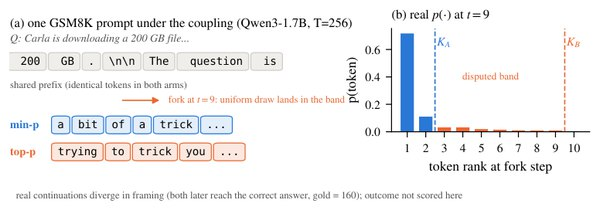

Truncation Samplers Are Nested: Comparing Decoding Rules Is a Measurement Problem

In one sentence. Shows that almost all deployed truncation samplers keep a prefix of the probability-sorted vocabulary and are therefore nested, which yields a closed-form separation certificate and a coupling that gives an unbiased, lower-variance paired estimator for comparing decoding rules.
Abstract
Settling one comparison between two truncation samplers has cost six thousand A100-hours, and nothing says in advance how far apart two samplers can be. We observe that almost every deployed truncation rule keeps a prefix of the probability-sorted vocabulary, so any two such rules are nested at every decoding step. Nesting yields a closed-form per-step distance and a coupling under which both samplers emit identical text until they first disagree. Accumulated over a generation, this gives a separation certificate that bounds the difference between two samplers on any bounded outcome, is computable from logs a comparison already produces, and equals their sequence-level total variation distance exactly when neither rule ever overtakes the other. Two consequences follow without measurement: exactness is fragile, and certifying a small difference requires the two retained masses to agree to very high precision at every step. On six open-weight models over four math and science benchmarks, the certificate for every hyperparameter grid we tested is at least 0.998, so a bound alone rarely settles a comparison, although two members of one family can be far closer. What remains useful is the coupling, which gives an unbiased paired estimator that cuts variance 1.2-3.8times against prompt-level pairing. Read against benchmark sizes at the default pair's variance and our point estimate of its between-prompt component, resolving a one-point difference needs 8 to 32 samples per prompt on GSM8K, MATH-500 and GPQA-Diamond and about 210 on AIME 2025; at that component's upper confidence bound GPQA-Diamond needs more than 32 and AIME 2025 cannot be resolved at any sample count. Choosing a truncation sampler is a measurement problem at least as much as a design one. The code is available at https://github.com/KurbanIntelligenceLab/truncation-samplers.
BibTeX
@article{khanbayov2026truncation,
title = {Truncation Samplers Are Nested: Comparing Decoding Rules Is a Measurement Problem},
author = {Khanbayov, Rasul and Kurban, Hasan},
journal = {arXiv preprint arXiv:2610.15570},
year = {2026}
}